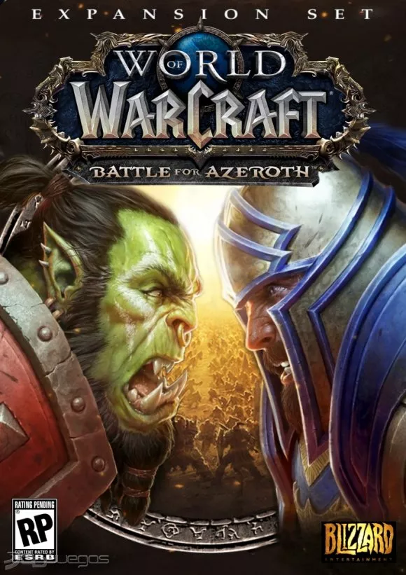

| Expansiones |
Lanzamiento |
Historia |
Caratula |
| Classic |
2004 |
World of Warcraft: Classic es la versión clásica del videojuego de rol multijugador de Blizzard. |
 |
| Burning Crusade |
2007 |
Kazzak, Señor de la Destrucción, abre de nuevo el Portal Oscuro que conduce a Terrallende, inundando
Azeroth con los voraces demonios de la Legión Ardiente. Las expediciones de la Horda y de la Alianza,
reforzadas con sus nuevos aliados elfos de sangre y draenei respectivamente, deben cruzar el umbral para
detener la invasión desde su origen. En la árida Península del Fuego Infernal, la Alianza halla a varios
de los héroes que cruzaron el portal hacía ya muchos años, mientras que la Horda entra en contacto con
los Mag´har, orcos sin corromper que no participaron en la invasión original de Azeroth. La expedición
a Terrallende arrastra a los ejércitos de la Horda y de la Alianza a un conflicto con los agentes de la
Legión y los tenientes de Illidan Tempestira, quien reclama el devastado reino como propio.
Justo después de su derrota en Terrallende, Kael’Thas Caminante del Sol regresa a Lunargenta, ciudad
capital de los elfos de sangre. En lugar de conducir a su gente a la gloria como prometió, el príncipe
en desgracia los traiciona, ya que su plan es usar la legendaria Fuente del Sol —origen del poder mágico
de los elfos de sangre— para traer al señor demoníaco Kil’jaeden a Azeroth. Con la ayuda de la Ofensiva
del Sol Devastado, un grupo constituido por elfos de sangre y draenei, los héroes de la Alianza y de la
Horda deben detener a Kael’thas y a Kil’jaeden, purificando la Fuente del Sol con ayuda de Velen, el
profeta draenei. |
|
| Wrath of the Lich King |
2008 |
Tras la purificación de la Fuente del Sol, hay un periodo de tensa calma en el mundo, que se verá
interrumpida cuando la Plaga de no-muertos lanza un ataque masivo contra las ciudades y los pueblos de
todo Azeroth, tanto en los Reinos del Este como en Kalimdor. Bajo presión de responder con un ejército
completo, el Jefe de Guerra Thrall envía una expedición a Rasganorte al mando del Señor Supremo Garrosh
Grito Infernal. Mientras tanto, Varian Wrynn, el rey humano que se encontraba desaparecido, regresa por
fin a la ciudad de Ventormenta y reclama su corona. Varian envía un ejército igual de poderoso a cargo
de Bolvar Fordragon para derrotar al Rey Exánime y a las fuerzas de la Horda que osasen cruzarse en su
camino.
Conforme se avecinaba la última batalla contra el Rey Exánime, la maga humana Jaina Valiente y la líder
de los Renegados, Sylvanas Brisaveloz viajan al gélido corazón de Rasganorte. Cada una tenía razones
distintas: Jaina espera descubrir si en el Rey Exánime aún queda algún resto de su antiguo amigo y amor
Arthas, mientras que Sylvanas busca vengarse de su antiguo enemigo. Con ayuda de estas dos heroínas, los
campeones de Azeroth deben asaltar la Ciudadela Corona de Hielo y derrotar a los esbirros del Rey
Exánime, y después de ello, enfrentarse a Arthas en persona para acabar de una vez por todas con la
Plaga. |
|
| Cataclism |
2010 |
Tras los eventos narrados en Wrath of the Lich King, Arthas ha muerto, y la guerra en Rasganorte parece
haber terminado, ya que la Plaga está controlada por Bolvar Fordragon, convertido en el nuevo Rey
Exánime, el carcelero de los malditos. Pero entonces, misteriosos terremotos comienzan a sacudir toda la
faz de Azeroth, y poco después, comienzan una serie de ataques elementales contra las capitales de la
Alianza y la Horda. Estos ataques son el preludio del resurgimiento del Dragón Aspecto corrupto
Alamuerte, que las destruirá, extendiendo su dañino poder por los dos continentes. Cinco años después,
en los que se suceden los eventos narrados en la novela World of Warcraft: The Shattering, Ventormenta y
Orgrimmar están en proceso de reconstrucción, y la faz del mundo en Azeroth ha cambiado por completo
tras los ataques de Alamuerte, que han reducido a cenizas algunas zonas y han provocado violentos
maremotos y terremotos que han partido literalmente la tierra en trozos, inundando algunas zonas y
haciendo resurgir otras. Alamuerte ha vuelto con un solo objetivo, el de destruir Azeroth, y no se
detendrá hasta conseguirlo.
Thrall, jefe de guerra de la Horda y chamán más poderoso de Azeroth, otorga el cargo de jefe de guerra a
Garrosh Grito Infernal para unirse al Anillo de la Tierra en su lucha contra Alamuerte. Esta criticada y
disputada decisión por parte de los altos cargos de la Horda llevará a esta nueva Horda a una serie de
medidas en las que será palpable el afloramiento de la locura de Garrosh. Es necesaria la unión de los
guerreros de la Horda y de la Alianza junto a los Dragones Aspecto para enfrentarse a los agentes de
Alamuerte y destruir al mism |
 |
| Mist of Pandaria |
2012 |
Tras la muerte de Alamuerte las confrontaciones entre la Horda y la Alianza por el control del nuevo
Azeroth se vuelven más hostiles que nunca. En la batalla entre dos buques contrarios es descubierta una
isla, la Isla Errante, en la cual viven unos Pandaren que abandonaron el mítico continente de Pandaria
hace siglos, y que deciden libremente unirse a la Alianza o a la Horda para ayudarles en la
reconstrucción de Azeroth. Más adelante, la bruma mística que rodea el continente de Pandaria se disipa,
y deja desprotegido el continente para la colonización de la Alianza y la Horda. Hasta allí parten
sendas expediciones, una de ellas comandada por el príncipe Anduin Wrynn de Ventormenta y la otra por el
general Nazgrim de la Horda. Anduin desaparecerá sin dejar rastro, lo que hará que el rey Varian Wrynn
mande una segunda expedición para rescatar a su hijo.
La guerra entre la Horda y la Alianza se centra en el control de este nuevo continente. Ambos
contrincantes se tendrán que enfrentar a los males que ya acechan allí y descubrir poderes desconocidos
en el antiguo Azeroth. Con los conocimientos aprendidos, la Horda, fragmentada y al mando de Garrosh,
recurre a utilizar los maléficos poderes del continente, dejándolo al borde de la destrucción y
contaminado por maléficos seres. Estas decisiones de Garrosh de corromper la Horda y destruir a todo
contrincante serán puestas en evidencia desde dentro y fuera de la Horda llevándola al enfrentamiento y
la división total. |
|
| Warlords of Draenor |
2014 |
Tras el derrocamiento de Garrosh Grito Infernal por sus crímenes en Pandaria, es sometido a juicio y
condenado a muerte. Antes de su ejecución, sin embargo, es rescatado por un dragón de bronce, de los que
controlan el flujo del tiempo, y es enviado al pasado del continente de Draenor, justo antes de que
Gul'dan le dé a beber la sangre del demonio Mannoroth a los orcos que provocará la primera guerra, tal y
como se narra en Warcraft. Garrosh, entonces, cambia la historia y se enfrenta a Gul'dan, lo captura y
evita así que los orcos se corrompan. Une a todos los clanes y forma la llamada Horda de Hierro, con la
cual planea, a través de un Portal Oscuro modificado que comunica con el Portal Oscuro del presente,
conquistar el Azeroth del presente, esta vez como una fuerza imparable de millones de orcos ajena al
control de la Legión Ardiente. Un destacamento de la Alianza y la Horda, liderados por el archimago
Khadgar deberán viajar al Draenor del pasado para intentar detener a Garrosh. Para detener la primera
invasión, lo primero que deben hacer, a su pesar, es liberar a Gul'dan, para así cerrar el Portal, lo
que provocará que la batalla sea contra dos enemigos: la Horda de Hierro de Garrosh por un lado, y los
seguidores de la Legión dirigidos por Gul'dan por otro. |
 |
| Legion |
2016 |
Procedente de Argus, se desata sobre Azeroth una invasión a gran escala de la Legión Ardiente, que
atacan distintas regiones de los Reinos del Este y Kalimdor. Buscando detenerles en el origen, un
destacamento de la Alianza y la Horda, dirigidos por los líderes de las facciones, Varian Wrynn y
Vol'jin, se dirige hacia las Islas Abruptas, donde se encuentra la Tumba de Sargeras y la base de la
Legión. Allí les está esperando Gul'dan y un ejército de millones de demonios. A pesar de luchar con
fiereza, los demonios se regeneran rápidamente tras morir, y pronto superan a la expedición. Sylvanas se
ve obligada a evacuar a la Horda tras ser herido mortalmente Vol'jin, lo que desde la Alianza, que no
han visto el motivo, ven como una traición. La Alianza entonces también decide retroceder, pero para
poder escapar, Varian Wrynn se sacrifica y se queda atrás, siendo asesinado por Gul'dan.
Anduin Wrynn será entonces proclamado definitivamente como rey de Ventormenta y líder de la Alianza, y
por su parte Vol'jin designa como nueva jefa de guerra a Sylvanas Brisaveloz. Por otro lado, Khadgar
descubre que la única forma de detener a la Legión y proteger a Azeroth de la invasión es encontrar
cinco artefactos conocidos como los Pilares del Mundo, que se encuentran precisamente en las Islas
Abruptas. De esta forma, teletransportan la ciudad flotante de Dalaran hasta las Islas Quebradas, donde
la Alianza y la Horda deberán enfrentarse a la Legión y recuperar los Pilares del Mundo intentando
superar las nuevas rencillas surgidas entre las dos facciones. |
|
| Battle for Azeroth |
2018 |
Tras los acontecimientos de la Legión, los comienzos de un nuevo conflicto entre la Alianza y la Horda
se inician, el Árbol de la vida Teldrassil es incendiado por la Horda, y la capital de los Renegados es
tomada por la Alianza, dejando a Kalimdor bajo el completo control de la Horda, y a los Reinos del Este
bajo el control de la Alianza.Battle for Azeroth lleva a las dos facciones a los continentes de Kul
Tiras y Zandalar para reclutar nuevos aliados con el fin de cambiar las tornas de la guerra. |
 |
| Shadowlands |
2020 |
Sylvanas Brisaveloz, la exjefa de guerra de la Horda, destruyó el velo que separaba a Azeroth del reino
de los muertos, desencadenando así una serie de eventos que podrían alterar el equilibrio cósmico entre
las fuerzas de la vida y la muerte. Los héroes de Azeroth se enfrentarán a los horrores de las fauces,
un Infierno para aquellos mortales que causaron mucho dolor, tratando de evitar las consecuencias de las
acciones de Sylvanas.
En la otra vida de las Tierras Sombrías, las almas de los muertos son juzgadas y transportadas a
diferentes reinos, de acuerdo a su virtud y acciones, pero ahora todas las almas son arrastradas
directamente a las fauces. Tratando de restaurar el ciclo de la vida y la muerte y descubrir lo que
Sylvanas pretendía, es necesario formar una alianza con los pactos que gobiernan los diferentes reinos
en las Tierras Sombrías.
Los persistentes Kyrian de Bastión son ángeles disciplinados que consideran sagrado su deber, el llevar
las almas de los mortales a las Tierras Sombrías y sean juzgados por La Arbitra en Oribos. La misteriosa
fauna de Ardenweald, que protege fervientemente los espíritus de la naturaleza que son parte del ciclo
de la reencarnación de la vida salvaje. Los astutos del Revendreth, que extraen la energía de las almas
de los orgullosos y arrogantes y corregir su conducta a través de un tormento y dolor desesperante. Los
necroseñores son las fuerzas militares de Maldraxxus que reúnen ejércitos de muertos vivientes para
defender las Tierras Sombrías y honrar a aquellos que buscan ganar honor y poder en la batalla.
Al explorar las Tierras sombrías, los jugadores también se encontrarán con leyendas de la historia del
universo de Warcraft que han muerto hace mucho tiempo, como Uther el iluminado, que fue corrompido
debido a su deseo de justicia contra su malvado alumno, Arthas, por una particular kyrian que lo lleva
al camino de la venganza. Kael'thas, que está encarcelado en Revendreth por sus crímenes cometidos
durante su vida y quiere vengarse de su viejo enemigo. |
|
| Dragonflight |
2022 |
Cuando ocurrió El Gran Cataclismo, los vuelos de dragón partieron a defender Azeroth de la invasión
demoniaca de la Legión Ardiente, las Islas Dragon se ocultaron gracias al poder de las instalaciones
titánicas para así poder aislarse del peligro, asimismo, todos los seres mágicos de estas islas quedaron
congelados. 10.000 años después de lo ocurrido, un guardián titánico decide usar las instalaciones para
que las Islas Dragon vuelvan a poder ser vistas por el mundo, lo que a la vez descongeló todas las
criaturas de estas islas. Ante tal revelación, los vuelos de dragón vuelven a su hogar ancestral, sin
embargo, se volverán a enfrentar las amenazas que siempre estuvieron presentes en estas islas. |
|